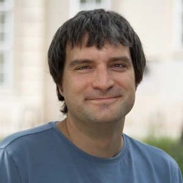

I am a mathematician/mathematical physicist and a researcher in mathematics education in the Analysis, Geometric Structures and Mathematical Physics section of the Faculty of
Mathematics at the University of Vienna. I am the coordinator of the Austrian Science Fund's (FWF) Emerging Fields project:
A new geometry for Einstein's Theory of Relativity and Beyond
My research interests include:
mathematical physics/mathematical general relativity:
professional knowledge of teachers, beliefs on teaching and learning mathematics
(applied) mathematics:
generalized functions, theory of PDE, kinetic theory, time frequency analysis & modulation spaces
What i'm doing
Book
I have co-authored the general introductory book Einführung in das Mathematische Arbeiten (German, Introduction into mathematical methodology) with Hermann Schichl. Together we
are running a service web page accompanying the book. We have been awarded the UNIVIE Teaching Award 2013 of Vienna University and the Ars Docendi 2016, the Austrian National
Award in University Teaching.
Professional Memberships
Also I am member and treasurer of the IAGF (The International Association for Generalized Functions), a life-time member of ISAAC (The International Society for Analysis, its
Applications and Computation), and a member of GDM (The German Society of Didactics of Mathematics).
Teaching Portfolio
My teaching includes a variety of courses in several areas of mathematics reaching from general first-year-courses to specialized courses and seminars in analysis, PDE and
geometry, as well as major courses in the teacher's training programme.
Supervisor in MCMP and VSM
I am a supervisor both in the Vienna Master Class Mathematical Physics (MCMP) which is run jointly by the Faculties of Mathematics and Physics of Vienna University, and Vienna
School of Mathematics (VSM) which is a new joint enterprise of the University of Vienna and the Technical University Vienna.
A new geometry for Einstein's Theory of Relativity and Beyond
- The Team

Clemens Saemann
Clemens Sämann is a Senior Postdoctoral Researcher at the University of Vienna, specializing in Lorentzian geometry, general relativity, and the study of low-regularity
spacetimes. His research focuses on synthetic approaches to Lorentzian geometry, including Lorentzian length spaces and causal structure. He has received the
START Prize
from the Austrian Science Fund and has held positions at top institutions like the
University of Oxford
and
University of Toronto
.
Raquel Perales
Raquel Perales is a mathematician who earned her Ph.D. in Mathematics from Stony Brook University in 2015. She has worked as an Investigadora por México at the Institute of
Mathematics at Oaxaca, part of the National Autonomous University of Mexico (IMATE-UNAM), and has recently moved to CIMAT (Center for Research in Mathematics) in Guanajuato,
Mexico. Her research interests lie in Geometric Analysis and Riemannian Geometry, with a focus on RCD(K,N) spaces, Ricci curvature, integral Ricci curvature, scalar curvature
lower bounds, Yamabe-type problems, and General Relativity.
Michael Kunzinger
Michael Kunzinger (born August 15, 1968, in Vienna) is an Austrian mathematician at the Faculty of Mathematics at the University of Vienna. Kunzinger studied mathematics and
physics at the University of Vienna. In 2003, he received the Promotion Prize from the Austrian Mathematical Society, and in 2004, he was awarded the START Prize from the
Austrian Science Fund (FWF). He is a member of the DIANA (Differential Algebras and Nonlinear Analysis) research group at the Faculty, which focuses on nonlinear theories of
generalized functions and their applications to partial differential equations and mathematical physics.
Chiara Rigoni
Chiara Rigoni is a mathematician specializing in Geometric Analysis and Riemannian Geometry. She earned her PhD in Mathematics from the University of Padua. Chiara's research
interests include Riemannian manifolds, Ricci curvature, and geometric flows, with applications to various areas of mathematical physics. She is actively involved in both
research and academic collaborations, contributing to the development of new geometric techniques.